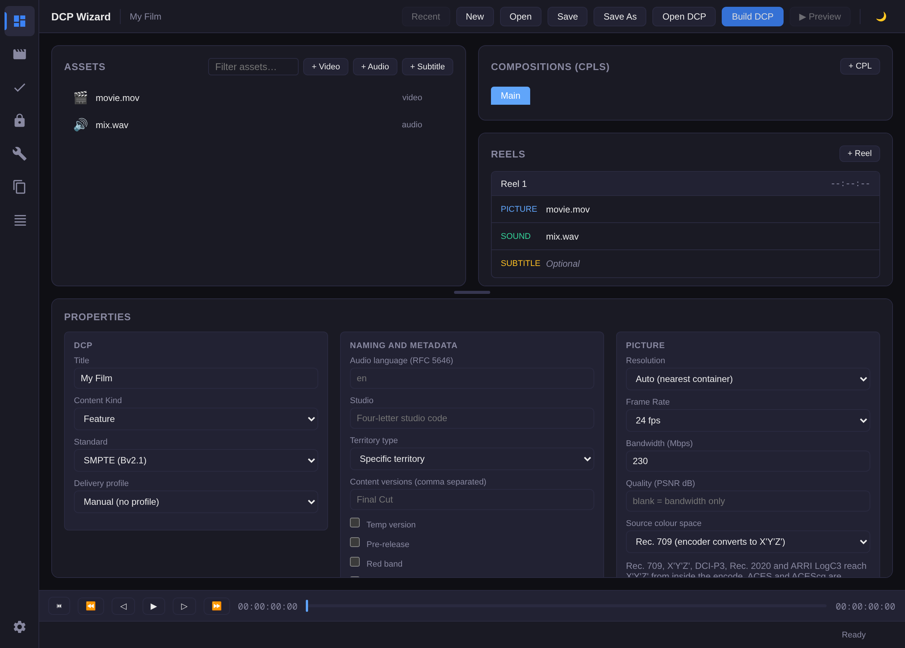
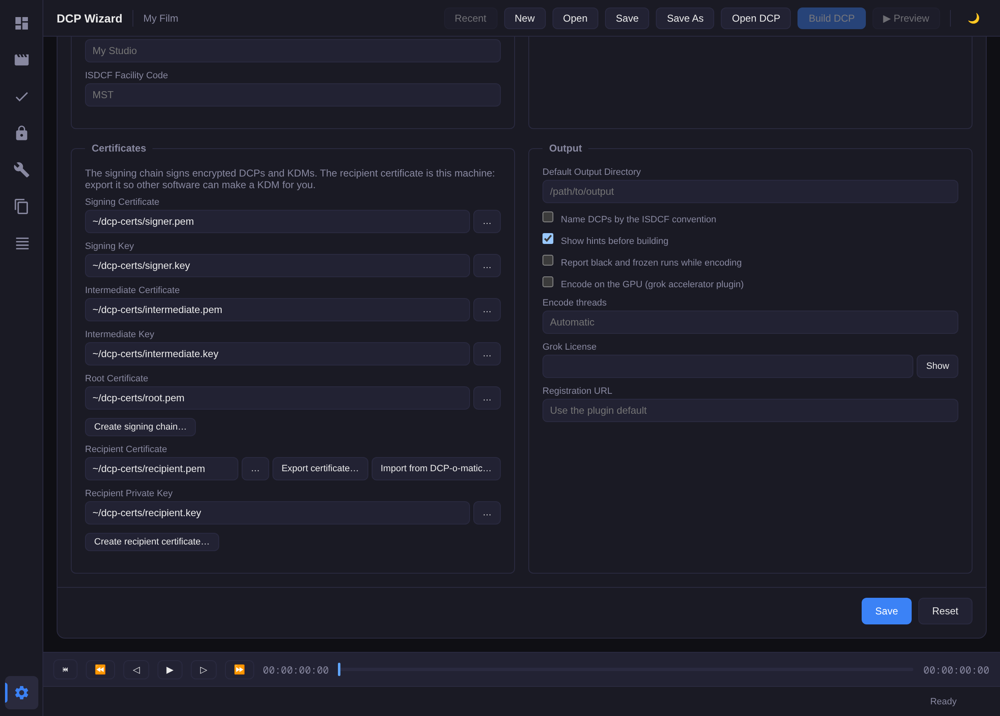
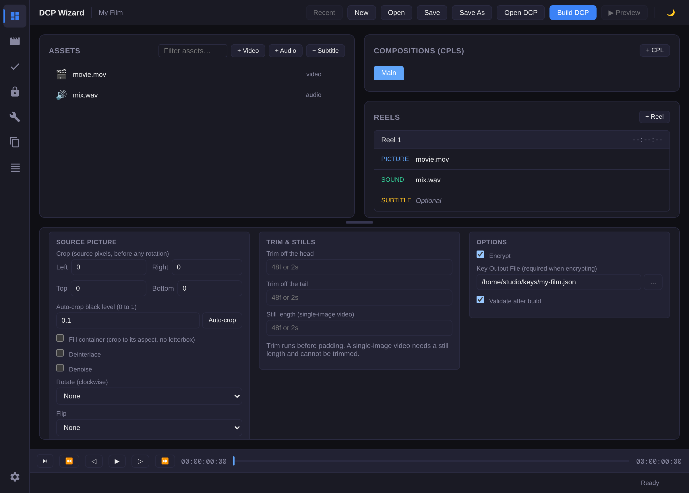
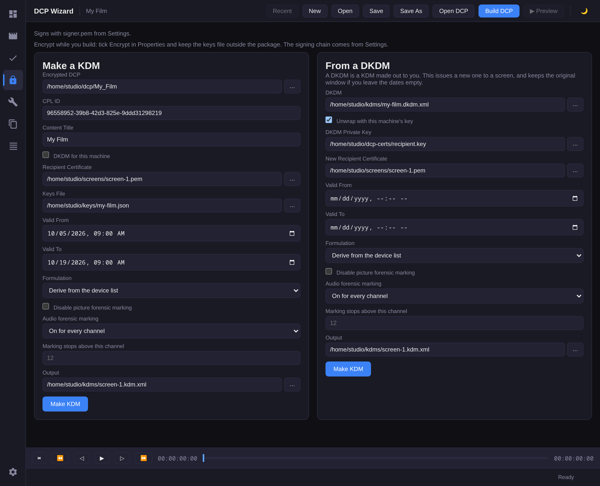

Manual
Twenty-one jobs. Each one is the app first, then the same job from a terminal. Certificates live in Settings, and Encryption & KDM uses that chain.
- Build a DCP
- Encrypt it
- Make a KDM
- Re-wrap a DKDM
- Export the recipient certificate
- Build several DCPs
- Validate a DCP
- See the reels on the Timeline
- Encode to JPEG 2000
- Transcode a video to frames
- Measure loudness
- Copy a DCP to a drive
- Make a QC report
- Convert SRT to SMPTE subtitles
- Extract subtitles
- Burn in subtitles
- Convert to a DCI container
- Re-ingest a package
- Export a DCP
- Make a Version File
- Change the settings
Build a DCP
In the app
On Project, drop the master on Assets, or press + Video and drop it on the Picture track. If the mix is its own file, press + Audio and drop it on Sound. In Properties, set Title, and under Output set Folder. Press Build DCP. The package is a new folder inside that one, named after the title. Sound comes from the video unless you added a WAV.
Assets and Reel 1
The build reads Reel 1: its Picture, Sound and Subtitle tracks are the package. The first video you import fills Picture, the first WAV fills Sound and the first subtitle file fills Subtitle. Anything imported after that stays in Assets until you drag it onto a track, which replaces what was there. A track takes only its own kind of file. Removing the asset on a track puts the next unassigned one of that kind on it, so a project with two videos keeps a Picture.
Mono WAVs that share a name up to a channel suffix become one channel set on Sound when you drop them together or pick them with + Audio. The suffix is the last part of the name after _, ., - or a space, and names a lane: L, R, C, LFE, Ls, Rs, Lc, Rc, BsL, BsR, HI or VI. So mix_L.wav, mix.R.wav and mix C.wav are one set, and the build puts each file on its lane. A WAV that does not fit a set, because it has no suffix, more than one channel or a lane the set already has, stays its own asset. Under Audio, Channel mapping names the file behind each row of a set, and the dotted cells show where each file or channel goes. A dotted cell routes at 0 dB until you type in its row, and then that row routes only the cells you typed.
Reels in the package come from Properties: Reel length cuts every that many minutes, 0 is one reel, and Split at cuts at the frames you list. Preview plays the asset or package you selected, or Reel 1's picture when nothing is selected.
Gain and fades
Under Audio, Gain raises or lowers the whole sound track by that many dB. With a gain typed, the loudness target is a reference for Set gain and is not applied automatically. With Gain empty, a loudness target such as leqm=85 or lufs=-20 sets the level, held under the true-peak ceiling. Fade in and Fade out bring the sound up from silence at the start and down to silence at the end over that many seconds. Under Trim & Stills, Picture fade in and Picture fade out do the same to the picture, from and to black. Fades and the level run on what is left after a trim, so the fades land on the first and last frames the package carries. A still hold takes no picture fade, and the build refuses one.
Measure, beside Loudness target, runs the sound steps a build runs and shows two lines. Source is the sound after routing, the channel map, the upmix, the delay and the trim. Delivered is the track the package will carry, after the loudness target or the gain and the fades. A third line lists what was applied, or Source track as is. With a loudness target typed, Set gain to reach target puts the difference between the target and the Source measurement of the same kind in Gain, to a tenth of a dB, which then sets the level in place of the target. Measure again to confirm the Delivered level.
Under the lines, a graph draws the Delivered track's short-term loudness, the loudness of the last 3 s read every 100 ms, from -60 to 0 LUFS against time in minutes and seconds. The solid line across it is the integrated loudness. The dashed vertical line marks where the true peak falls, labelled with its dBTP value. With a target in LUFS a dashed line shows it. A Leq(m) target has no line, because Leq(m) is not on the LUFS scale. A stretch of digital silence leaves a gap in the curve, and a track under 3 s draws no curve.

From a terminal
dcpwizard create --title "My Film" --video movie.mov --audio mix.wav --output ./dcp
Encrypt it
In the app
Open Settings. Under Certificates, press Create signing chain…, type the organization, and pick a folder. The app fills in the signing certificate, its key, the intermediate, and the root, and saves them.

Back on Project, under Properties, Options, tick Encrypt and choose a Key Output File that is not inside the package. Press Build DCP. Keep that keys file. A package that was already built in the clear stays clear.

From a terminal
dcpwizard certificate chain --organization "Studio" --output ~/dcp-certs dcpwizard create --title "My Film" --video movie.mov --output ./dcp \ --encrypt --key-out ~/keys/my-film.json \ --signer-cert ~/dcp-certs/signer.pem \ --signer-key ~/dcp-certs/signer.key \ --signer-chain ~/dcp-certs/intermediate.pem \ --signer-chain ~/dcp-certs/root.pem
Make a KDM
In the app
Open Encryption & KDM. Under Make a KDM, pick the encrypted DCP. CPL ID and Content Title fill in. Pick the screen's Recipient Certificate, the Keys File from the build, Valid From, Valid To, and an output folder. Press Make KDM. The signature is the chain in Settings.
Tick DKDM for this machine when the KDM is for you. The recipient is then the certificate in Settings, so you can reissue it later.

From a terminal
dcpwizard kdm \ --cpl-id <cpl-uuid> \ --content-title "My Film" \ --cert screen.pem \ --signer-cert ~/dcp-certs/signer.pem \ --signer-key ~/dcp-certs/signer.key \ --signer-chain ~/dcp-certs/intermediate.pem \ --signer-chain ~/dcp-certs/root.pem \ --keys ~/keys/my-film.json \ --valid-from now --valid-to "2 weeks" \ -o screen.kdm.xml
Re-wrap a DKDM
In the app
On the same screen, under From a DKDM, pick the DKDM and the new screen certificate. If the DKDM was made for this machine, tick Unwrap with this machine's key. Leave Valid From and Valid To empty to keep the DKDM's window. Press Make KDM.
From a terminal
dcpwizard kdm-rewrap \ --dkdm my.dkdm.xml \ --dkdm-key ~/dcp-certs/recipient.key \ --cert screen.pem \ --signer-cert ~/dcp-certs/signer.pem \ --signer-key ~/dcp-certs/signer.key \ --signer-chain ~/dcp-certs/intermediate.pem \ --signer-chain ~/dcp-certs/root.pem \ -o screen.kdm.xml
Export the recipient certificate
In the app
In Settings, Certificates, press Create recipient certificate… and pick a folder. That needs the signing chain from earlier. If DCP-o-matic is already on this machine, press Import from DCP-o-matic… instead. That copies its decryption certificate and private key.
Press Export certificate… and send that file to the QC software. It is the public certificate. The private key stays here, and the button will not write a file that also holds a key.
The QC tool uses it to aim a KDM at this copy of DCP Wizard. To open one of your encrypted DCPs over there, give it a KDM aimed at the QC tool, or the keys file from the build.
From a terminal
dcpwizard certificate generate -t leaf \ --cn "Studio" --organization "Studio" \ --issuer-cert ~/dcp-certs/intermediate.pem \ --issuer-key ~/dcp-certs/intermediate.key \ --output-cert ~/dcp-certs/recipient.pem \ --output-key ~/dcp-certs/recipient.key dcpwizard preferences import-dcpomatic
Build several DCPs
In the app
Build DCP adds the build to Jobs. Builds run one at a time, in the order you pressed Build DCP. While the first one runs, change the Title, or open the next project from Recent Projects, or press New and add its assets, and press Build DCP again. It shows in Jobs as queued and starts when the one before it finishes. Build DCP is greyed only while the Title matches a build that is queued or running, since two builds with one title would write the same folder.
Open Jobs from the sidebar to see each build's state and progress. Press ✕ on a queued or running row to cancel it. A queued row has Run next, Earlier and Later buttons, which reorder the queue. The running build never moves.
From a terminal
# Build a package from every master that lands in ./incoming
dcpwizard watch ./incoming --output ./packages -- --standard smpte
# Run the daemon in one terminal and queue from another, batch add exits 1 when the daemon is not running
dcpwizard daemon
dcpwizard batch add -T create-dcp -p '{"title":"My Film","standard":"Smpte","resolution":"TwoK","content_type":"Feature","frame_rate_num":24,"frame_rate_den":1,"max_bitrate_mbps":250,"encrypt":false,"stereo_3d":false,"container_width":0,"container_height":0,"output_dir":"./dcp","j2k_dir":"./j2k","audio_path":"./audio.wav","audio_input_order":"Canonical51","subtitle_language":"en","reel_length_minutes":0}'
dcpwizard batch list
dcpwizard batch move 3 --before 2
The daemon's jobs show in the same Jobs panel, with their own Run next, Earlier and Later buttons.
Validate a DCP
In the app
Open Verify, press Select DCP… and pick the package folder, then press Validate. The app runs the strict SMPTE check and then the Bv2.1 profile check, and a package with only warnings passes. Inspect MXF essence is off by default, so the picture bitstream is not read unless you tick it. Inspect, in the bottom bar after a build, opens this view on the new package and runs it.
From a terminal
dcpwizard verify "./dcp/My Film" --strict dcpwizard verify "./dcp/My Film" --strict --no-picture-check -o verify.html
See the reels on the Timeline
In the app
Press Open DCP on Project and pick a package, then open Reels & Timeline. The Picture and Sound tracks show one block per reel of the package's first CPL, with the reel's length. Click the ruler or a track to move the preview to that point. With no package open it shows the project's own reels, picture, sound and subtitle, each as long as its video.
From a terminal
dcpwizard info "./dcp/Two Reels"
Encode to JPEG 2000
In the app
Open Tools. Under Encode to JPEG 2000, pick the image sequence folder as Input, pick an Output Directory, set Bandwidth (Mbps) and press Encode. The codestreams go in a j2k folder inside the output. Resolution fits each frame into the 2K or 4K full container, and Frame Rate is the rate the bitrate is budgeted at.
From a terminal
dcpwizard encode -i ./frames -o ./encoded --bandwidth 230
Transcode a video to frames
In the app
Under Transcode Video, pick the Input Video and an Output Directory, choose Format and Bit Depth, and press Transcode. The frames come out as frame_00000001.tiff and on, at the source's size, ready to be the Input of Encode to JPEG 2000. A 16-bit TIFF of a 2K frame is about 12 MB, so a 90 minute feature fills well over a terabyte.
From a terminal
dcpwizard transcode -i movie.mov -o ./frames --format tiff --bit-depth 16
Measure loudness
In the app
To measure the sound a build will package, use Measure under Audio in Properties, see Gain and fades. Under Loudness Measurement, pick the Audio File and press Measure. It reports integrated loudness in LUFS, true peak in dBTP and the loudness range. The file has to be a WAV or a sound MXF out of a DCP. The picker also offers FLAC, AIFF and MP3, and those fail.
From a terminal
dcpwizard loudness mix.wav
Copy a DCP to a drive
In the app
Under Copy DCP, pick the Source DCP folder and the Destination, then press Copy DCP. The package lands in a folder of the same name inside the destination. Each file is read back after the copy and its hash checked against the source.
From a terminal
dcpwizard copy --src "./dcp/My Film" --dst ./drive
Make a QC report
In the app
Under QC Report, pick the DCP Directory and press Generate Report. The report is an HTML page written beside the package as its folder name plus .qc.html, never inside it, so the package stays clean for delivery.
From a terminal
dcpwizard report --dcp "./dcp/My Film" -o report.html
Convert SRT to SMPTE subtitles
In the app
A build converts an SRT on the Subtitle track by itself, so this is only for a standalone SMPTE subtitle XML. Under SRT → SMPTE Subtitle Conversion, pick the SRT and an Output Folder and press Convert. The XML takes the SRT's name, and with no folder picked it goes beside the SRT.
From a terminal
dcpwizard subtitle-convert -i subs.srt -o subs.xml -l en --fps 24 --vposition 8
Extract subtitles
In the app
Under Subtitle Extraction, press Folder for a DCP or File for a subtitle XML or MXF, choose Format and press Extract. The text goes to subtitles.srt or subtitles.txt in Output Folder, or in the folder that holds the input when Output Folder is empty. Cue times come out rounded to the DCP's frames.
From a terminal
dcpwizard subtitle-extract -i "./dcp/Subbed" -o subtitles.srt
Burn in subtitles
In the app
Subtitle Burn-in makes a review copy, a video file rather than a package. For a DCP with burnt-in text, set Burn subtitles into the picture in Properties and build. Burn In writes the video's name plus _burnin.mp4 into Output Directory, or beside the video. It takes SRT, ASS, and SMPTE or Interop XML, which it converts first. TTML fails.
From a terminal
dcpwizard burnin -i movie.mov -s subs.srt -o review.mp4
Convert to a DCI container
In the app
Target Conversion scales, crops or letterboxes a video to one of the six DCI containers. Convert writes the video's name plus the container, for example clip_2k-scope.mov, into Output Directory, or beside the video. From a terminal the codec follows the output's name, so scope.mov comes out as H.264.
From a terminal
dcpwizard convert -i movie.mov -t 2k-scope -m letterbox -o scope.mov
Re-ingest a package
In the app
Under Re-ingest Package, pick the Package Directory and press Rebuild ASSETMAP & PKL. It writes a new ASSETMAP and PKL listing every asset file in the folder, deletes the old ones, and leaves the essence alone. With a signing chain in Settings the new PKL is signed, which an encrypted package needs to pass Validate.
From a terminal
dcpwizard ingest-package ./pkg dcpwizard ingest-package ./pkg \ --signer-cert ~/dcp-certs/signer.pem \ --signer-key ~/dcp-certs/signer.key \ --signer-chain ~/dcp-certs/intermediate.pem \ --signer-chain ~/dcp-certs/root.pem
Export a DCP
In the app
Under Export DCP, press DCP folder or CPL or MXF, choose Format, press Save as for the Output and press Export. A composition exports with all its reels in order as one file. A picture MXF on its own exports silent unless a Sound override is given. An encrypted DCP needs its KDM with the Recipient private key it was issued to, or the KEYS.json from the build.
From a terminal
dcpwizard export --input "./dcp/My Film" -o my-film.mp4 --format h264 dcpwizard export --input ./dcp/Locked --keys ~/keys/locked.json -o locked.mp4
Make a Version File
In the app
Open Version File (Supplemental DCP) and pick the Original Version (OV) Directory and an Output Folder. Under Replacement Reels, set each Reel number and pick its Picture, a folder of J2K frames or an MXF through MXF…, or its Sound, a WAV, which a 16-bit file is widened to 24 bits for, press + Reel for the next one, and press Create Version File. The VF goes in a new folder named after Title, which defaults to the OV's title with _VF on the end. A replacement has to run exactly as long as the reel it replaces, or Create Version File refuses it. Validate the VF against its OV from a terminal, as below.
From a terminal
dcpwizard create-vf --ov "./dcp/Two Reels" --output ./vf \ --replace-picture 2=./j2k-reel2 --replace-sound 2=reel2.wav dcpwizard verify "./vf/Two Reels_VF" --strict --ov "./dcp/Two Reels"
Change the settings
In the app
Open Settings, change what you need and press Save. Terminal commands read the same file, so Encode on the GPU, Encode threads, Grok License and Report black and frozen runs while encoding apply there too, and their flags override them. A build goes to Default Output Directory when Folder is empty, and ISDCF Facility Code fills the mastering facility in the CPL and the ISDCF name when the project leaves it blank. If grok cannot start the GPU plugin, Save unticks Encode on the GPU and the status bar says why. Standard, Resolution, Frame Rate and Bandwidth are what a new project starts with. Reset puts every setting back to its default.
From a terminal
dcpwizard preferences show dcpwizard preferences set encode-threads 8